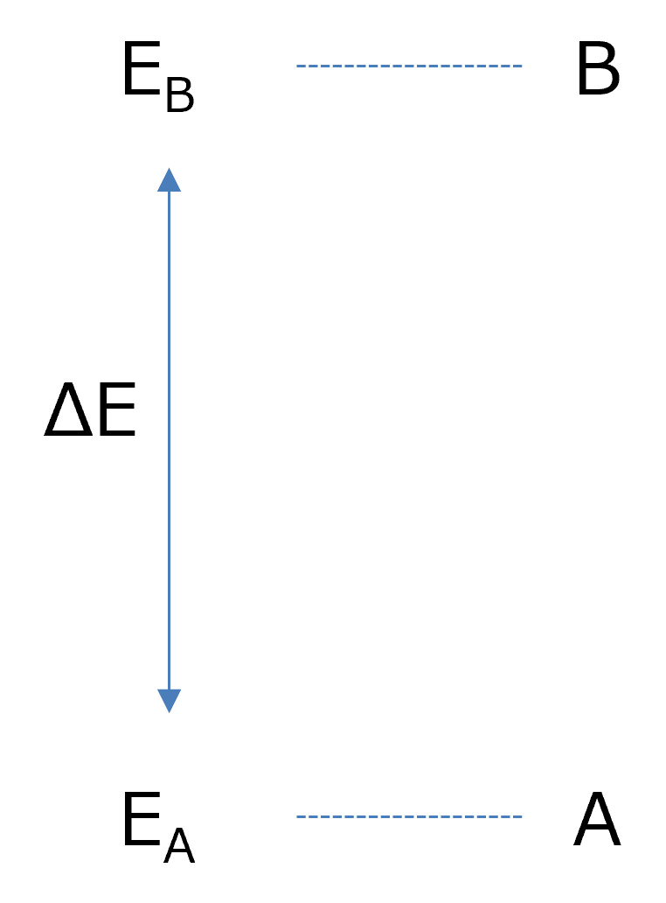

速度定数とエネルギー差
化学反応論， 化学平衡論で反応式についていろいろ学びましたが，自由エネルギーとの関係を考えていきましょう．
単純な一次の化学平衡において，
\( \Large \hspace{15 pt} \ce{A <=>C[ k_{AB} ][k_{BA}]B} \)
を考えます．A状態とB状態は平衡状態にあり，各々行き来しながらそれぞれの滞在割合は一定であると言えます．
この場合の平衡は，
\( \Large k_{BA} \cdot P(A) = k_{AB} \cdot P(B) \)
となるので，平衡定数Kを使って，
\( \Large K \equiv \frac{k_{BA}}{k_{AB}} = \frac{ P(B)}{ P(A)} \)
となります（平衡状態においてKの定義が上記でいいのか，その逆数がいいのかは，よく知らないです）
もし，AとBが同じエネルギー状態なら，その比は，１；１と等しくなるはずです．
しかし，もし，エネルギー状態がBのほうがAより高ければ，エネルギー状態が高いBには存在しづらくなりますので，その比は，
\( \Large P(B) < P(A) \)
となります．
このエネルギー状態による存在割合を，ボルツマン分布，によって説明できるとすると，各状態のエネルギー状態をEA, EB,とすると，

\( \Large P(A) \propto exp \left[ - \frac{E_A}{k_B T} \right]\)
\( \Large P(B) \propto exp \left[ - \frac{E_B}{k_B T} \right]\)
この関係を上記の平衡定数に当てはめてみると，
\( \Large K = \frac{ P(B)}{ P(A)}
=\displaystyle \frac{exp \left[ - \frac{E_B}{k_B T} \right]}{exp \left[ - \frac{E_A}{k_B T} \right]}
=
exp \left[ - \frac{E_B-E_A}{k_B T} \right]
=
exp \left[ - \frac{ \Delta E}{k_B T} \right]
\hspace{40 pt} (\Delta E \equiv E_B-E_A) \)
速度定数は，
\( \Large\frac{k_{BA}}{k_{AB}} = exp \left[ - \frac{ \Delta E}{k_B T} \right]\)
となります．
速度定数の比とエネルギー差との関係はわかりましたが，このエネルギー差をどう配分するかがわかりません．
そこで，絶対的な速度（もしくは比例定数）をωとして，λ，ν，というパラメータを用意します．
\( \Large k_{AB} = \omega \ exp \left[ - \lambda \frac{ \Delta E}{k_B T} \right]\)
\( \Large k_{BA} = \omega \ exp \left[ - \nu \frac{ \Delta E}{k_B T} \right]\)
\( \Large\frac{k_{BA}}{k_{AB}} = \displaystyle \frac{\omega \exp \left[ - \lambda \frac{ \Delta E}{k_B T} \right]}{\omega \exp \left[ - \nu \frac{ \Delta E}{k_B T} \right]}
= \exp \left[ - ( \lambda - \nu ) \frac{ \Delta E}{k_B T} \right]
\)
となるので，
\( \Large \lambda - \nu = 1 \)
の条件を満たす必要があります．したがって，
\( \Large \nu = \lambda - 1\)
となるので，
\( \Large k_{AB} = \omega \ exp \left[ - \lambda \frac{ \Delta E}{k_B T} \right]\)
\( \Large k_{BA} = \omega \ exp \left[ - ( \lambda - 1 ) \frac{ \Delta E}{k_B T} \right] \)
と表すことができます．
もし，λ=1，の場合は，
\( \Large k_{AB} = \omega \ exp \left[ - \frac{ \Delta E}{k_B T} \right]\)
\( \Large k_{BA} = \omega \)
もし，λ=0，の場合は，
\( \Large k_{AB} = \omega \)
\( \Large k_{BA} = \omega \ exp \left[ \frac{ \Delta E}{k_B T} \right]\)
とどちらかが，エネルギー差に依らない速度定数となります．
この，λ，は今のところ未知数（多分）で，単純に，
λ = 0.5
とおけば，
\( \Large k_{AB} = \omega \ exp \left[ - 0.5 \frac{ \Delta E}{k_B T} \right]
= \omega \ exp \left[ - \frac{ \Delta E}{2 \ k_B T} \right] \)
\( \Large k_{BA} = \omega \ exp \left[ - (0.5 - 1 ) \frac{ \Delta E}{k_B T} \right]
=
\omega \ exp \left[ \frac{ \Delta E}{2 \ k_B T} \right]\)
と指数の中の分母に２(=1/0.5)がつきます．
実は私の論文リストの中にもさり気なく，この２を使って計算しています．
また，Fan Bai, Richard Berry.の論文にも0.5を使っています(Supporting Online Materialのp.31)
．
ただ，岡田新学術でご一緒した，理研の川口先生，京都大学の佐々先生，東大の沙川先生の共著論文（佐野領域のニュースレターはこちら）では，λ≒０，がF1ATP合成酵素において成り立つという実験と理論から導き出しています．
このパラメータが，物理化学的にどのような意味を持つのか，は私にはわかりません．
また，前から気になっていた点も別ページに，記載します．